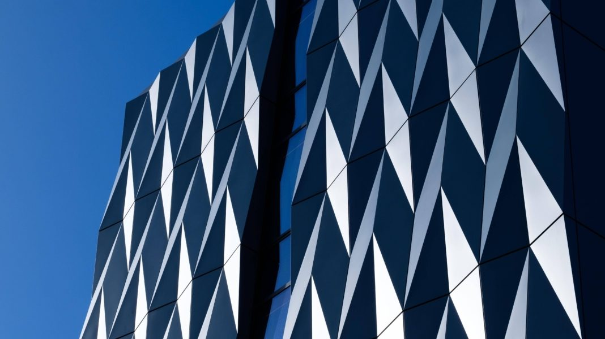

Between monthly PCG meetings, a school board or a Crown sponsor mostly waits and worries. Southbase already runs the build. Nobody sells them the client’s experience of it — a living, plain-language view of where the project is, what happens next, and what needs deciding. This page is that layer, working.
In December 2025 the Southbase/Built JV made Health NZ’s national panel for projects over $200m. Panel members compete consortium-against-consortium — and client experience and reporting are scored non-price attributes in Crown procurement. The build wins the job; the client’s view of the build wins the next one.
A fictional school project — Te Awa Primary, stage 2 rebuild (invented, so no real job is borrowed). The left side is what the site produces. The right side is what the client sees — in their own language, per stakeholder. Switch the lens and watch the same fortnight change register.
Milestone confirmed: block B roof structure complete — with photo evidence from the capture walk, not a sentence in a report.
Joinery colour lock. The framed choice — not a phone call: two options, each with its cost and time impact, and the date the programme needs an answer by.
The one thing the contractor needs from the client this fortnight: confirm the site access window for the open day. Nothing else is asked.
Waiting on the joinery decision…
Simulated. In the pilot this is the artefact: the month, assembled — dropped straight into the PCG report the client-side PM currently builds by hand.
Crown tenders score more than price. When the RFP asks how the consortium will keep the client informed, the answer shouldn’t be written from scratch at 11pm — it should be assembled from the journey you already run. Press the button: the agent drafts the attribute response from this page’s own machinery, and it arrives as a draft, unsigned.
Respondents must demonstrate their approach to sponsor and stakeholder communication, decision management, and reporting across the delivery phase.
The client sees one calm pane. Behind it, assembl’s HANGA construction crew — six agents that already exist in the assembl marketplace — each working its own regulated lane and feeding the journey. Wiring them to a Southbase project is the proposed pilot; the agents themselves are built.
Critical path, milestones, payment claims and variations — the programme truths the client view draws from.
Building consent status, inspections, producer statements, CCC — the consent trail, traceable in plain language.
Risk registers, incident and near-miss reporting, inductions — the safety record the sponsor can actually read.
ITPs, hold points, defects, producer statements and the punch list — quality evidence as it accrues, not at the end.
Materials, suppliers, site logistics and environmental controls — the supply story behind every milestone.
Model coordination, clash status, as-built documentation — the digital twin the capture walk photographs land in.

Te Rangihīroa · ŌtepotiPayment claims are certified by the QS and the engine of the contract — never by this layer. It reports certification; it does not perform it.
Consent status is reported from the record. What the council will decide, and how to satisfy a condition, stays with the council and the professionals.
Commercially sensitive subcontractor pricing never crosses into the client pane. The client sees programme truth, not the commercial ledger.
Every client note is drafted by the journey and signed by the PM. The draft is the speed; the signature is the trust.
It reports where the programme is — it never promises the client a date the contractor hasn’t committed to.
The Construction Contracts Act 2002 gives payment claims, certification and adjudication their statutory clock — the journey is traceable because the law already makes it so.
Every claim event, decision and consent status on the client view carries its timestamp and its author. The client sees the fortnight; the record satisfies the contract.
simulated journey · illustrative concept · the numbers above are the pilot’s to earn, not ours to claim
One live project, one full PCG cycle, instrumented against the current fortnight of silence. Read-only feeds from what already runs; every client note drafted by the journey and signed by your PM; the proof pack lands in the next PCG report. The numbers you quote afterwards are your own.
Median elapsed time to a building consent — against a median statutory clock of nine. The difference is the file waiting on information a complete application would have carried.
Of building consent applications were processed inside the statutory 20 working days. The system is keeping its clock — the wait that remains belongs to the file.
New Zealanders spent 22 million hours on hold in 2025 — 8.7 hours each. Nearly half say slow service is reason enough to switch.
Offered a callback instead of holding, 58% took it. People do not object to waiting. They object to waiting with nothing.
Every figure carries its source and its country, and overseas figures are flagged as overseas. Where no local number exists we say so rather than inventing one — there is still no published NZ study of what a request-for-information cycle costs a build programme.